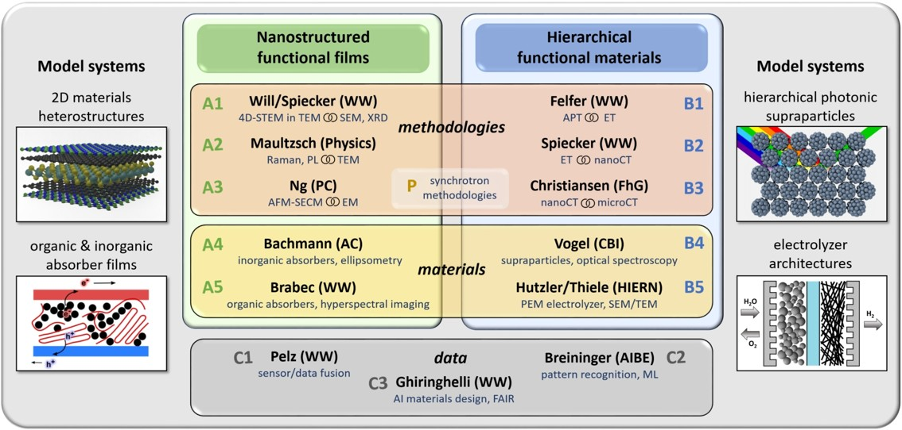

Open PhD Position: Dose-efficient Data Fusion for Crystalline Mapping and Imaging of Functional Thin Films

About the Position
We are seeking a highly motivated PhD student to join the CorMic Graduate School at Friedrich-Alexander-Universität Erlangen-Nürnberg (FAU) for an exciting doctoral project focused on dose-efficient data fusion for crystalline mapping and imaging of functional thin films.
Starting Date: April 1, 2026
Duration: 4 years
Location: Erlangen, Germany
Project Overview
This doctoral project (DP 1) aims to develop cutting-edge physics-informed data fusion algorithms that correlate local crystallinity, crystal orientation, and chemical information from 4D-STEM and 4D-STEM-in-SEM experiments. The primary goal is to significantly enhance the signal-to-noise ratio (SNR) of measurements and apply these methods in experimental settings.
Key Research Areas
1. Multi-modal Data Fusion
- Develop algorithms to fuse elastic and inelastic spectroscopic signals in STEM
- Enhance SNR through correlation of multiple measurement channels
- Extract local structure-property information from functional thin films
2. Beam-sensitive Materials Analysis
- Focus on organic thin films that require low-dose imaging
- Implement dose-efficient measurement strategies
- Preserve sample integrity while maximizing information extraction
3. Specific Applications:
- Inorganic semiconductor layers
- Organic absorber layers and electrolyzers
- 3D correlation studies combining SECM-AFM and 4D-STEM:
4. Validation and Comparison
- Compare developed approaches with ensemble statistics from spatially averaging X-ray scattering measurements
- Validate methods against established techniques
Your Profile
Required Qualifications
- Master’s degree in Physics, Materials Science, Electrical Engineering, or related fields
- Strong background in electron microscopy and/or data analysis
- Experience with Python, Pytorch, or similar machine learning frameworks
- Excellent analytical and problem-solving skills
- Strong written and oral communication skills in English
Preferred Qualifications
- Experience with 4D-STEM, EELS, or EDS techniques
- Knowledge of machine learning and signal processing
- Familiarity with thin film characterization methods
- Experience with scientific computing and data fusion algorithms
What We Offer
Research Environment
- Access to state-of-the-art electron microscopy facilities at CENEM
- Integration into the CorMic Graduate School network
- Interdisciplinary research environment with experts in materials science, physics, and chemistry
Professional Development
- Structured PhD program with regular progress reviews
- Opportunities to present at international conferences
- Training in advanced microscopy techniques
- Networking with industry partners and research institutions
Benefits
- Competitive salary according to German public service scale (TV-L E13, 100%)
- Health insurance and social security benefits
- Modern research facilities and equipment
Application Process
Required Documents
- Cover letter explaining your motivation and research interests
- Curriculum vitae with publication list (if applicable)
- Academic transcripts and certificates
- Master’s thesis or equivalent research work
- Two letters of recommendation from academic supervisors
Application Deadline
Applications will be reviewed on a rolling basis until the position is filled. Early applications are encouraged.
How to Apply
Please send your application materials as a single PDF file to: Email: philipp.pelz@fau.de
Subject: “PhD Application - CorMic DP1 Data Fusion”
About CorMic Graduate School
The CorMic Graduate School is a collaborative initiative focused on advancing microscopy techniques for materials characterization. Our research spans from fundamental physics to applied materials science, with a strong emphasis on developing next-generation analytical tools.
About FAU and CENEM
Friedrich-Alexander-Universität Erlangen-Nürnberg (FAU) is one of Germany’s leading research universities, consistently ranked among the top institutions for materials science and physics research.
CENEM (Center for Nanoanalysis and Electron Microscopy) provides world-class electron microscopy facilities and expertise, serving as a hub for advanced materials characterization in Germany.
We are committed to diversity and equal opportunity. We welcome applications from candidates of all backgrounds and encourage women and underrepresented groups to apply.
For questions about the position, please contact Prof. Philipp Pelz or the CorMic Graduate School administration.